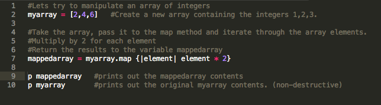
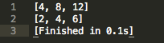
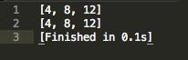
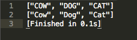
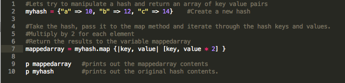
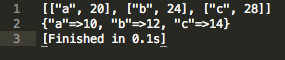

May
Enumerable Map Method

In the Enumerable class, map is probably one of the most widely used method. The method takes an enumerable object and a block (of code), then runs through the block for every element and returning an array back to the caller. There are two versions of map, map is a non destructive version which exist in the Enumerable class that will not tamper with your original array you're passing to the method. While map!, which exist in the Array class is destructive and will alter your original array. I originally didn't want to talk about map! since its not part of the Enumerable class but I felt it was very important to know the difference between the two.
So lets show an example of passing in an array of integers to the map and map! methods.
Using map on an array of integers

Results from using map on integers

Using map! on an array of integers
Results from using map! on integers

Now lets show an example of passing in an array of strings to the map method.
Using map on an array of strings
Results from using map on strings

Lastly lets show an example of passing a hash to the map method. (You can't use map! on hashes)
Using map on a hash
Results from using map on a hash

The map method is a quick and easy way to take a collection of elements whether its an array, range, or hash, and transform the value to whatever you need. Just remember to be careful with the destructive map! version that works for arrays only vs the non destructive map version.
Resources
Ruby Doc Enumerable map methodStackoverflow.com - What does the map method do in ruby?
APIDock.com - Enumerable map